Hàng đợi hai đầu (deque) và Bài toán tìm max-min trong đoạn tịnh tiến
Tác giả: - Bùi Minh Hoạt - Hung Vuong High School for the Gifted, Phu Tho Province - Nguyễn Châu Khanh - Hung Vuong High School for the Gifted, Phu Tho Province
Reviewer: Phạm Tuấn Nghĩa
Định nghĩa¶
Deque (Double-ended queue) là một kiểu dữ liệu trừu tượng tổng quát hóa một hàng đợi. Nó là nó kiểu danh sách mà có thể bổ sung và loại bỏ một phần ở đầu hoặc cuối danh sách. 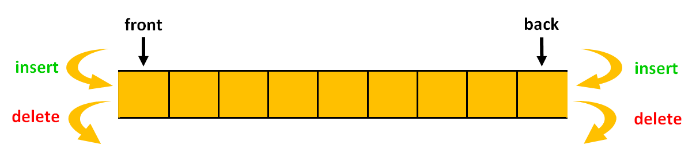
Các thao tác deque hỗ trợ: - push_front(\(x\)): Đẩy \(x\) vào đầu deque - push_back(\(𝑥\)): Đẩy \(x\) vào cuối deque - pop_front(): Loại bỏ phần tử ở đầu deque - pop_back(): Loại bỏ phần tử ở cuối deque - empty(): Kiểm tra Deque có rỗng không? - size(): Trả về số phần tử đang có trong deque
Độ phức tạp:
- Độ phức tạp thời gian của tất cả các hoạt động trong deque là \(O(1)\)
- Độ phức tạp thời gian của truy cập ngẫu nhiên theo chỉ mục là \(O(n)\)
Bài toán 1¶
Cho một dãy \(A\) gồm \(N\) phần tử được đánh số từ 1 đến \(N\). Phần tử thứ \(i\) có giá trị là \(A[i]\). Cho \(k\) là một số nguyên dương (\(k ≤ N\)). Với mỗi phần tử \(i\) (\(k ≤ i ≤ N\)), tìm giá trị nhỏ nhất của các phần tử trong đoạn từ \(i – k + 1\) đến \(i\) trên dãy \(A\). \(minRange[i] =\) giá trị nhỏ nhất trong đoạn \([i - k + 1 … i]\)
Input: - \(Dòng\) \(1\): chứa hai số nguyên dương \(N \le 10^5 , 𝑘 \le N\) cách nhau bởi dấu cách - \(Dòng\) \(2\): chứa \(N\) số nguyên dương \(A_1, A_2, … , A_N\) \((∀𝑖: A_𝑖 ≤ 10^9)\) cách nhau bởi dấu cách
Output: In ra \(N − 𝑘 + 1\) dòng: - Dòng thứ \(i\) in ra giá trị nhỏ nhất \(minRange[i]\) của các phần tử trong đoạn từ \(i - k + 1\) đến \(i\).
Ví dụ:
Input
8 4
1 3 5 7 4 5 9 5
Output
1
3
4
4
4
Phân tích¶
Với bài toán này ta có thể duyệt tất cả các đoạn gồm \(k\) phần tử liên tiếp trong mảng \(A\) để tìm giá trị nhỏ nhất. 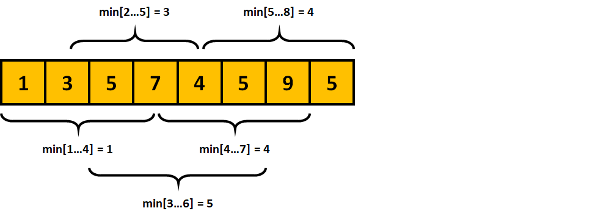
const int MAXN = 1e5 + 105;
const int INF = 1e9 + 7;
for (int i = K; i <= N; ++i) {
int minRange = +INF;
for (int j = i; j >= i - K + 1; --j)
minRange = min(minRange, A[j]);
cout << minRange << '\n';
}
Tuy nhiên cách làm này không đem lại hiệu quả cao. Độ phức tạp: \(O(k \cdot (N - k))\)
Mỗi lần gán \(minRange = min(minRange, A[j])\) thì mấu chốt là những vị trí mà \(minRange\) thay đổi. Vậy nên ta sẽ chỉ lưu lại những vị trí có thể làm thay đổi \(minRange\). Ta thấy rằng các vị trí lưu vào tăng dần về cả giá trị cũng như vị trí.
Minh họa
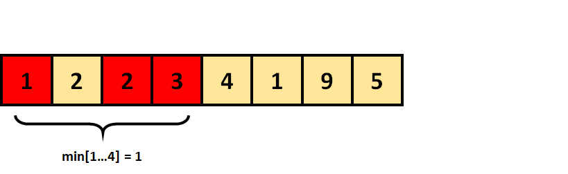
Các ô được tô màu đỏ là các ô làm thay đổi giá trị \(minRange\). Ô thứ \(2\) có giá trị \(A[2] = 2\) ta không cần quan tâm vì ngay từ \(A[3] = 2\) nó đã không nằm trong danh sách các ô màu đỏ.
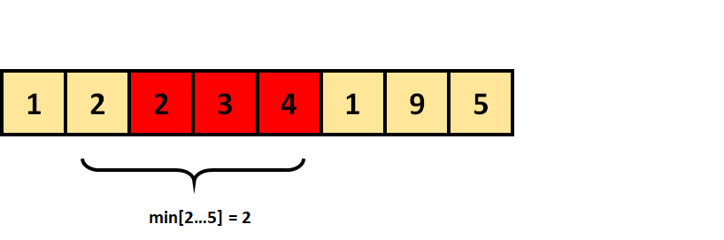
Tương tự, đối với đoạn \([2 ... 5]\) ta cũng không cần quan tâm đến ô thứ \(2\) có giá trị \(A[2] = 2\). Do đó ta có thể làm như sau:
Tìm giá trị nhỏ nhất
Minh họa test: Cho \(N\) \(=\) \(8\), \(K\) \(=\) \(4\), dãy \(A\) \(=\) \([1, 3, 5, 7, 4, 5, 9, 5]\)
Đầu tiên chúng ta khởi tạo một hàng đợi hai đầu nhằm mục đích lưu vị trí của phần tử có giá trị nhỏ nhất.
Lúc đầu hàng đợi hai đầu của chúng ta rỗng 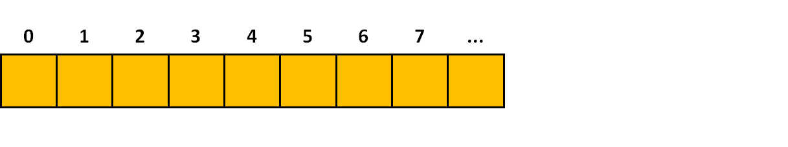 Đối với phần tử đầu tiên vì do hàng đợi rỗng nên ta sẽ đẩy phần tử này vào cuối hàng đợi 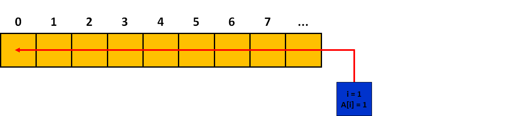 Tiếp theo ta sẽ đẩy lần lượt các phần tử có vị trí \(2\)\(;\) \(3\) và \(4\) vào cuối hàng đợi. 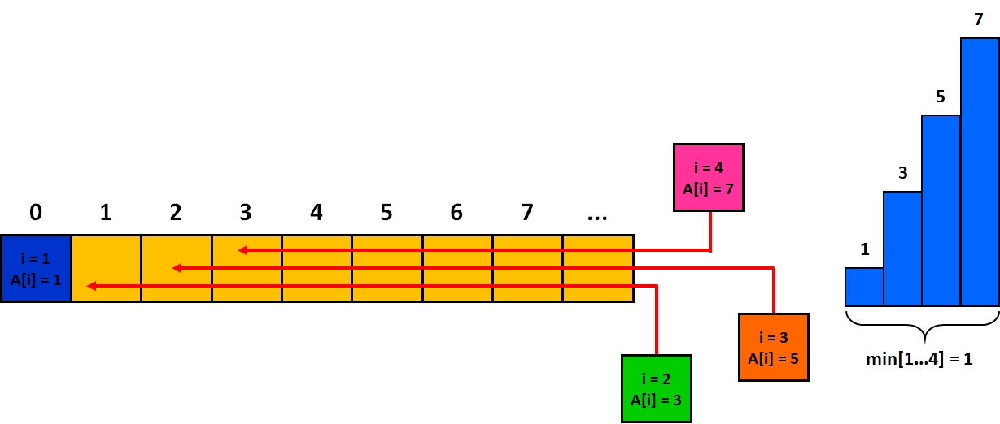 Vì ta chỉ xét các đoạn trong khoảng từ \([i - k + 1 … i]\). Do đó khi ta xét đến phần tử thứ \(5\) thì phần tử đầu tiên trong hàng đợi có vị trí \(i = 1\) không còn ý nghĩa gì nữa. Vì vậy ta sẽ loại bỏ phần tử đầu tiên ra khỏi hàng đợi. Khi ta loại bỏ phần tử đầu tiên ra khỏi hàng đợi thì tất cả các phần tử đứng sau phần tử đó để được đẩy lên \(1\) ô và hàng đợi sẽ được đánh số lại. 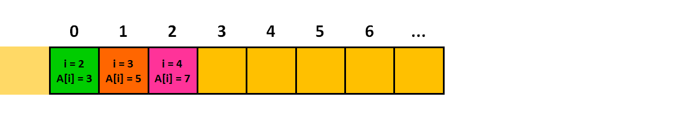
Tiếp đến khi ta chuẩn bị đẩy phần tử thứ \(5\) vào hàng đợi thì nhận thấy rằng giá trị của nó nhỏ hơn giá trị của phần tử cuối trong hàng đợi.
Liệu rằng phần tử cuối cùng trong hàng đợi kia còn ý nghĩa gì trong việc tính giá trị nhỏ nhất nữa không?
Câu trả lời là \(không\). Vì nó đã không phải là giá trị nhỏ nhất trong đoạn \([i - k+ 1 ... i]\) rồi thì càng không thể là giá trị nhỏ nhất trong đoạn \([(i + 1) - k + 1 … i + 1]\).
Vì vậy ta sẽ loại bỏ tất cả các phần tử cuối cùng trong deque nếu nó có giá trị lớn hơn hoặc bằng giá trị \(A[i]\) đang xét.
Sau khi loại bỏ tất cả các phần tử cuối cùng và đẩy phần tử \(i = 5\) vào thì hàng đợi sẽ có những giá trị sau:
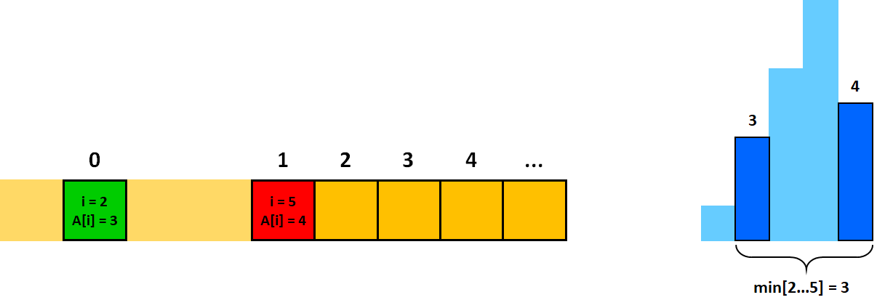 Ta tiếp tục đẩy phần tử thứ \(6\) vào deque 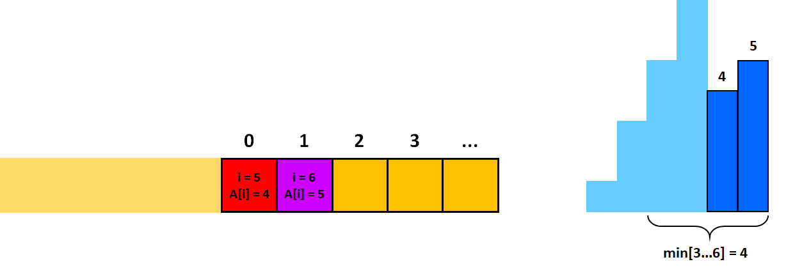 Sau đó ta tiếp tục đẩy phần tử thứ \(7\) vào deque 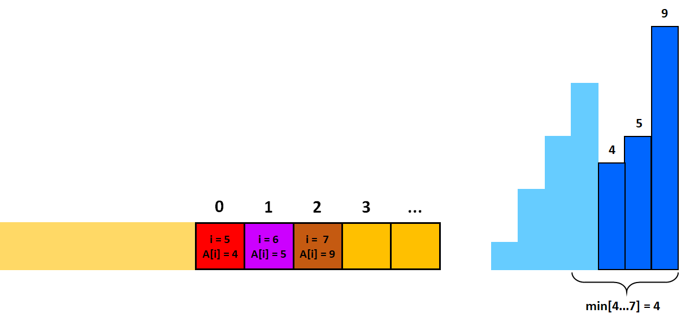 Khi ta chuẩn bị đẩy phần tử thứ \(8\) vào deque, ta nhận thấy rằng giá trị của nó nhỏ hơn giá trị của phần tử cuối trong hàng đợi. Do đó ta sẽ loại bỏ phần tử cuối cùng trong deque cho đến khi giá trị của phần tử cuối cùng nhỏ hơn giá trị ta chuẩn bị đẩy vào. 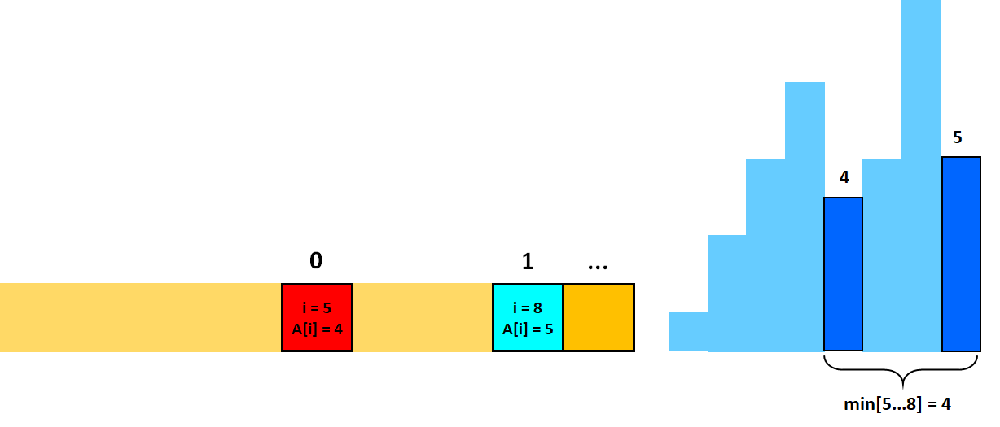 Ta có thể rút ra được các nhận xét quan trọng như sau: - Ở mọi thời điểm, giá trị \(A[i]\) trong deque luôn tăng nghiêm ngặt. Khi ta đẩy phần tử thứ \(i\) vào deque thì nó luôn là phần tử có giá trị lớn nhất. - Vì đây là dãy tăng nghiêm ngặt thế nên phần tử đầu tiên luôn là phần tử nhỏ nhất. (Đây chính là min trong đoạn \([i - k + 1 … i]\)) - Tại mỗi bước tính \(minRange[i]\) ta chỉ loại bỏ tối đa \(1\) phần tử đầu deque khi nó không thuộc khoảng đang xét. - Mỗi phần tử chỉ được đẩy vào deque tối đa \(1\) lần duy nhất.
Từ các nhận xét như kia, ta có thể dễ dàng hình thành thuật toán. Ta duyệt qua từng phần tử: - Bước 1: Trong khi hàng đợi khác rỗng và giá trị của phần tử cuối cùng trong deque lớn hơn hoặc bằng giá trị đang xét hiện tại thì ta sẽ đẩy hết ra khỏi hàng đợi. - Bước 2: Đẩy vị trí \(i\) của phần tử đang xét hiện tại vào cuối deque. (Ta không nên đẩy giá trị \(A[i]\) vào bên trong hàng đợi. Vì làm như thế thì ta sẽ rất khó trong việc quản lý đoạn cần lấy kết quả) - Bước 3: Nếu vị trị của phần tử đầu tiên trong hàng đợi không nằm trong khoảng đoạn xét thì ta loại bỏ nó. - Bước 4: Đáp án cần tìm chính là giá trị của phần tử đầu tiên trong deque.
Cài đặt¶
Tìm min trong đoạn tịnh tiến
Ta cần phải sử dụng những cấu trúc sau: - Cấu trúc dữ liệu hàng đợi hai đầu: \(deque\) - Lưu lại vị trí của phần tử có giá trị nhỏ nhất - Mảng \(A\), lưu các phần tử nhập vào, tốn \(O(N)\) bộ nhớ - Mảng \(minRange\), lưu đáp án của bài toán, tốn \(O(N)\) bộ nhớ - Để dễ cài đặt thì ta chỉ cần đẩy vị trí \(i\) vào hàng đợi. Khi ta có vị trị \(i\) thì ta hoàn toàn có giá trị \(A[i]\) tương ứng.
deque <int> dq;
/* Làm rỗng deque */
while (dq.size()) dq.pop_front();
/* Duyệt lần lượt các phần tử từ 1 đến N */
for (int i = 1; i <= N; ++i) {
/* Loại bỏ các phần tử có giá trị lớn hơn hoặc bằng A[i] */
while (dq.size() && A[dq.back()] >= A[i]) dq.pop_back();
/* Đẩy phần tử i vào queue */
dq.push_back(i);
/* Nếu phần tử đầu tiên trong deque nằm ngoài khoảng tính
thì ta sẽ loại bỏ ra khỏi deque */
if (dq.front() + k <= i) dq.pop_front();
/* minRange[i] là giá trị nhỏ nhất trong đoạn [i – k + 1 … i] */
if (i >= k) minRange[i] = A[dq.front()];
}
Đánh giá¶
Tất cả các thao tác cơ bản trên deque (pop_back(), pop_front() và push_back()) có thể dễ dàng được thực hiện với thời gian chạy là \(O(1)\). Mỗi phần tử vào deque đúng \(1\) lần và bị loại bỏ đúng \(1\) lần nên độ phức tạp của thuật toán này khi xây dựng là \(O(N)\) trong mỗi lần tìm \(min\) trong đoạn tịnh tiến.
Mở rộng¶
Tìm giá trị lớn nhất¶
Để tìm giá trị lớn nhất thì ta làm ngược lại quá trình tìm giá trị nhỏ nhất.
Ta sẽ tạo \(1\) deque nhằm mục đích lưu vị trí của phần tử có giá trị lớn nhất.
Ở bước 1, thay vì loại bỏ các phần tử có giá trị lớn hơn hoặc bằng ra khỏi đầu deque thì ta sẽ loại bỏ các phần tử có giá trị nhỏ hơn hoặc bằng ra khỏi đầu deque. Lúc này, phần tử đầu deque luôn là phần tử lớn nhất. Và ở mọi thời điểm giá trị trong deque luôn là giảm nghiêm ngặt.
Tại sao ta không nên sử dụng cấu trúc dữ liệu cây phân đoạn?¶
Ta chỉ có thể giải quyết bài toán này bằng cấu trúc dữ liệu \(Segment\) \(Tree\). Để xây dựng được cây \(Segment\) \(Tree\) thì chúng ta sẽ phải chuẩn bị: - Bộ nhớ: \(O(N)\) - Khởi tạo: \(O(log_{2}N)\) - Ta phải trả lời \(N - K + 1\) vị trí. Do đó tổng độ phức tạp sẽ là \(O(log_{2}N + (N - K + 1) \cdot log_{2}N)\)
Khi nào thì không thể dùng deque để tìm max min trong đoạn tịnh tiến?¶
Với phương pháp dùng deque để tìm \(max-min\) trong đoạn tịnh tiến thì bạn sẽ không thể giải quyết được bài toán sau:
Cho một dãy số \(A[i]\) \((1≤ A[i] ≤10^9)\) có \(N (1 ≤ N ≤10^5)\) phần tử. Cho \(M (1 ≤ M ≤ 200,000)\) truy vấn có dạng: - \(0\) \(pos\) \(val\): Thay đổi giá trị phần tử thứ \(pos\) thành \(val\) - \(1\) \(k\) \(i\): Tính giá trị nhỏ nhất trong đoạn \([i - k + 1 … i]\) \((i - k + 1 ≥ 1)\) - \(2\) \(k\) \(i\): Tính giá trị lớn nhất trong đoạn \([i … i + k - 1]\) \((i + k - 1 ≤ N)\)
Như đã trình bày ở trên thì độ phức tạp khi xây dựng kĩ thuật tìm \(max-min\) trong đoạn tịnh tiến là \(O(N)\)
Tuy nhiên thuật toán này chỉ thực sự hiệu quả khi chúng ta không có thao tác cập nhật lại giá trị của mảng. Nói cách khác thì với phương pháp này chúng ta chỉ có thể áp dụng khi bài toán là bài toán xử lý offine. Lý do là bởi giả sử chúng ta có M thao tác cập nhật giá trị mà mỗi khi cập nhật lại giá trị thì ta sẽ phải tính lại max và min trong từng vị trí \(i\) \((1 ≤ i ≤ N)\). Lúc này thì độ phức tạp của thuật toán sẽ là \(O(M \cdot N)\) và sẽ bị quá thời gian cho phép.
Để giải quyết được bài toán này thì chúng ta có thể sử dụng cấu trúc cây phân đoạn với độ phức tạp là \(O(Mlog_{2}N)\).
Một số lỗi thường gặp¶
Khi lấy giá trị trong deque ra thì bạn chưa kiểm tra hàng đợi của mình có đang rỗng không? Nếu hàng đợi rỗng mà bạn vẫn lấy giá trị \(front()\) hoặc \(back()\) thì chương trình sẽ sinh lỗi.
Bài toán 2¶
Đề bài¶
Trong một round đấu, rồng thần của Hoạt có thể khạc tối đa đạt \(N\) phát chí mạng vào team địch. Sát thương chí mạng của lần khạc thứ \(i\) gây ra là \(A_i\). Tuy nhiên rồng thần cần có một khoảng thời gian để hồi lại mana. Vậy nên rồng thần không thể khạc \(K\) lần chí mạng liên tiếp. Bạn hãy chỉ cho Hoạt cách điều khiển sức mạnh của rồng thần sao cho tổng sát thương chí mạng gây ra của rồng thần là lớn nhất. Input: - Dòng thứ nhất: chứa hai số nguyên \(1 ≤ N ≤ 10^5; 2 ≤ K ≤ 10^5\) - Dòng thứ hai chứa N số nguyên \(A_1, A_2, …, A_N\) \((1 ≤ A_i ≤ 10^4)\) – sát thương chí mạng lần khạc thứ \(i\) của rồng thần.
Output: Tổng sát thương chí mạng lớn nhất mà rồng thần có thể gây ra.
Input:
7 3
1 4 2 3 6 5 9
23
Phân tích¶
Phân loại bài: data structures, dp
Gọi \(dp[i]\) là tổng sát thương nhỏ nhất mà rồng thần đã bỏ qua khi xét đến vị trí \(i\) và sẽ tiếp tục bỏ qua phát khạc thứ \(i\) Khởi tạo: - \(dp[0] = 0\) - \(dp[i] = INF;\) với \(\forall i: 1 ≤ i ≤ N + 1\)
Công thức quy hoạch động: Với \(\forall i: 1 ≤ i ≤ N + 1\) thì \(dp[i] = min(dp[j]) + A[i]\) \(\forall j: max(1, i - K) ≤ j ≤ i - 1\) Kết quả của bài toán là: Tổng sát thương của \(N\) phát khạc trừ đi \(dp[N + 1]\)
dp[0] = 0;
for (int i = 1; i <= N + 1; ++i) dp[i] = +INF;
ans = 0;
for (int i = 1; i <= N; ++i) ans += A[i];
for (int i = 1; i <= N + 1; ++i)
for (int j = max(0, i - K); j <= i - 1; ++j)
dp[i] = min(dp[i], dp[j] + A[i]);
cout << ans - dp[N + 1] << '\n';
Cài đặt¶
Ta cần phải sử dụng những cấu trúc sau: - Cấu trúc dữ liệu hàng đợi hai đầu: \(deque\) - Lưu lại vị trí của phần tử có giá trị nhỏ nhất - Mảng \(A\), lưu các phần tử nhập vào, tốn \(O(N)\) bộ nhớ - Mảng \(dp\), lưu đáp án của bài toán, tốn \(O(N)\) bộ nhớ - Để dễ cài đặt thì ta chỉ cần đẩy vị trí \(i\) vào hàng đợi. Khi ta có vị trị \(i\) thì ta hoàn toàn có giá trị \(dp[i]\) tương ứng.
int ans = 0;
dq.push_back(0);
for (int i = 1; i <= N + 1; ++i) {
while (dq.size() && dq.front() < i - K) dq.pop_front();
dp[i] = dp[dq.front()] + A[i];
ans += A[i];
while (dq.size() && dp[dq.back()] >= dp[i]) dq.pop_back();
dq.push_back(i);
}
cout << ans - dp[N + 1] << '\n';
Bài toán 3¶
Đề bài¶
Tòa nhà chọc trời Có \(N\) tòa nhà chọc trời được đánh số từ \(1\) đến \(N\). Tòa nhà thứ \(i\) có độ cao là \(H[i]\). Từ tòa nhà thứ \(i\) ta có thể nhảy đến tòa nhà thứ \(j\) \((i < j)\) nếu như thỏa mãn một trong các điều kiện sau: - \(i + 1 = j\) - \(max(H[i + 1], …, H[j - 1]) < min(H[i], H[j])\) - \(max(H[i], H[j]) < min(H[i + 1], …, H[j - 1])\)
Hiện tại Gnar đang đứng trên tòa nhà \(1\). Mục tiêu của anh ấy là nhảy đến tòa nhà thứ \(N\) với số lần nhảy là ít nhất. Hãy giúp Gnar nhé!!! Đầu vào: - Dòng đầu tiên chứa một số nguyên duy nhất \(N\) \((2 ≤ N ≤ 3 \cdot 10^5)\) – tổng số lượng nhà chọc trời. - Dòng thứ hai chứa N số nguyên \(H_1, H_2, …, H_N\) \((1 ≤ H_i ≤ 10^9)\) – chiều cao của các tòa nhà chọc trời.
Đầu ra: In ra số lượng bước nhảy tối thiểu để Gnar có thể nhảy đến tòa nhà thứ \(N\).
Ví dụ:
Input
5
1 3 1 4 5
3
4
4 2 2 4
1
5
100 1 100 1 100
2
Phân tích¶
Phân loại bài: data structures, dp, graph
Trường hợp 1: Nếu \(i + 1 = j\) thì ta có thể xây dựng đồ thị cạnh nối giữa \(i\) và \(j\).
Trường hợp 2: Nếu tòa nhà thứ \(i\) và \(j\) thỏa mãn điều kiện \(max(H[i + 1], …, H[j - 1]) < min(H[i], H[j])\) nghĩa là tất cả các tòa nhà nằm giữa \(i\) và \(j\) đều có chiều cao nhỏ hơn \(min(H[i], H[j])\).
Điều này có nghĩa là tồn tại tòa nhà \(k\) \((i + 1 \le k \le j - 1)\) có độ cao lớn nhất trong các tòa nhà từ \(i + 1\) đến \(j - 1\). Nếu \(H[k] < min(H[i], H[j])\) thì tất cả các tòa nhà từ \(i + 1\) đến \(j - 1\) đều nhỏ hơn \(min(H[i], H[j])\).
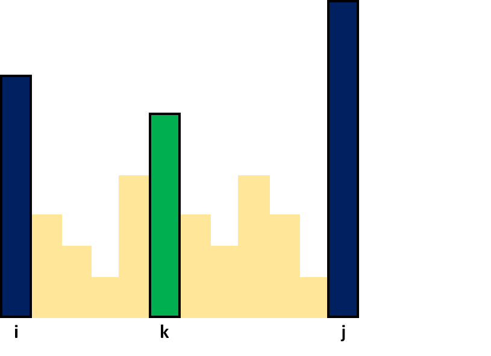
Làm thế nào để tìm được hai biên nhận tòa nhà k làm max? Vì \(max(H[i + 1], …, H[j - 1]) < min(H[i], H[j])\) nên \(H[k] < min(H[i], H[j])\). Điều này có nghĩa là cả \(2\) tòa nhà \(i\) và \(j\) đều lớn hơn tòa nhà \(k\) do đó tòa nhà \(i\) và \(j\) sẽ không nằm trong khoảng nhận tòa nhà \(k\) là \(max\).
Gọi \(L[k]\) là vị trí xa nhất tính từ vị trí \(k\) về bên trái nhận độ cao \(H[k]\) là \(max\)
Gọi \(R[k]\) là vị trí xa nhất tính từ vị trí \(k\) về bên phải nhận độ cao \(H[k]\) là \(max\)
Do đó tòa nhà \(i\) sẽ là \(L[k] - 1\) và tòa nhà \(j\) sẽ là \(R[k] + 1\).
Vì \(max(H[L[k]] ... H[R[k]]) = H[k]\) nên nếu \(H[k] < min(H[L[k] - 1], H[R[k] + 1])\) thì từ tòa nhà \(L[k] - 1\) ta hoàn toàn có thể nhảy đến tòa nhà \(R[k] + 1\). Do đó ta xây dựng đồ thị có cạnh nối giữa tòa nhà \(L[k] - 1\) với tòa nhà \(R[k] + 1\).
Tại sao khi tìm tòa nhà \(i\), \(j\) ta không tìm tòa nhà gần nhất mà lại phải là xa nhất?
Giả sử tòa nhà gần nhất bên trái, bên phải nhận tòa nhà \(k\) làm \(max\) lần lượt là \(p\) và \(q\). Khi ta tìm được 2 tòa nhà này thì ta cũng chẳng thể kết luận tòa nhà \(p - 1\) có thể nhảy sang tòa nhà \(q + 1\). Mà giả sử \(min(H[p - 1], H[q + 1]) > H[k]\) thì \(p\), \(q\) cũng là tòa nhà xa nhất nhận tòa nhà \(k\) làm \(max\).
Vì vậy ta sẽ xét tất cả các tòa nhà \(k\) để có thể tìm được tòa nhà \(i\) và \(j\) thỏa mãn yêu cầu đề bài.
Trường hợp 3: Nếu tòa nhà thứ \(i\) và \(j\) thỏa mãn điều kiện \(max(H[i], H[j]) < min(H[i + 1], …, H[j - 1])\) nghĩa là tất cả các tòa nhà nằm giữa \(i\) và \(j\) đều có độ cao lớn hơn hẳn \(max(H[i], H[j])\). 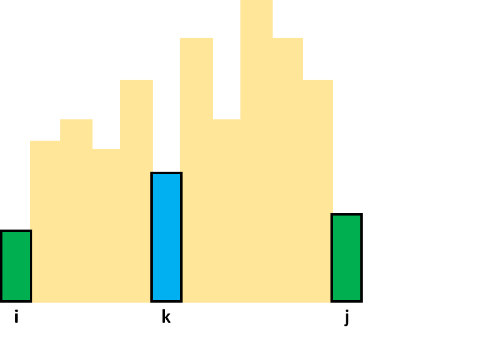
Lập luận tương tự. Ở trường hợp này ta sẽ xây dựng \(2\) mảng \(l\) và \(r\).
Gọi \(l[k]\) là vị trí xa nhất tính từ vị trí \(k\) về bên trái nhận độ cao \(H[k]\) là \(min\)
Gọi \(r[k]\) là vị trí xa nhất tính từ vị trí \(k\) về bên phải nhận độ cao \(H[k]\) là \(min\)
Đối với mỗi vị trí \(k\) \((1 ≤ k ≤ N)\), \(H[k]\) sẽ là độ cao nhỏ nhất trong đoạn từ \(l[k]\) đến \(r[k]\). Vì \(min(H[l[k]] ... H[r[k]]) = H[k]\) nên nếu \(max(H[l[k] - 1], H[r[k] + 1]) < H[k]\) thì ta hoàn toàn có thể nhảy từ tòa nhà \(l[k] - 1\) sang tòa nhà \(r[k] + 1\).
Do đó ta xây dựng đồ thị có cạnh nối giữa tòa nhà \(l[k] - 1\) với tòa nhà \(r[k] + 1\)
Khi đã xây dựng được đồ thị thì có thể quy hoạch động hoặc sử dụng thuật toán tìm đường đi ngắn nhất \(BFS\) để tính số lần nhảy ít nhất.
Cài đặt¶
Xây dựng mảng L
/* L[k]: Xa nhất về bên trái nhận H[k] là max */
dq.clear();
for (int k = 1; k <= N; ++k) {
while (dq.size() && H[dq.front()] <= H[k]) dq.pop_front();
if (dq.size()) L[k] = dq.front() + 1;
else L[k] = k;
dq.push_front(k);
}
Xây dựng mảng R
/* R[k]: Xa nhất về bên phải nhận H[k] là max */
dq.clear();
for (int k = N; k >= 1; --k) {
while (dq.size() && H[dq.front()] <= H[k]) dq.pop_front();
if (dq.size()) R[k] = dq.front() - 1;
else R[k] = k;
dq.push_front(k);
}
Xây dựng mảng l
/* l[k]: Xa nhất về bên trái nhận H[k] là min*/
dq.clear();
for (int k = 1; k <= N; ++k) {
while (dq.size() && H[dq.front()] >= H[k]) dq.pop_front();
if (dq.size()) l[k] = dq.front() + 1;
else l[k] = k;
dq.push_front(k);
}
Xây dựng mảng r
/* r[k]: Xa nhất về bên phải nhận H[k] là min */
dq.clear();
for (int k = N; k >= 1; --k) {
while (dq.size() && H[dq.front()] >= H[k]) dq.pop_front();
if (dq.size()) r[k] = dq.front() - 1;
else r[k] = k;
dq.push_front(k);
}
Xây dựng đồ thị
for (int i = 1; i <= N; ++i) G[i].push_back(i + 1);
for (int k = 1; k <= N; ++k) {
if (H[k] < min(H[L[k] - 1], H[R[k] + 1])) {
G[L[k] - 1].push_back(R[k] + 1);
}
}
for (int k = 1; k <= N; ++k) {
if (max(H[l[k] - 1], H[r[k] + 1]) < H[k]) {
G[l[k] - 1].push_back(r[k] + 1);
}
}
Đánh giá¶
- Số cạnh tối đa trong bài toán này: \(M = 3 \cdot N\)
- Chi phí thời gian xây dựng 4 mảng \(L, R, l, r\) là \(O(N)\)
- Chi phí thời gian thuật toán \(BFS\) là \(O(N + M)\)